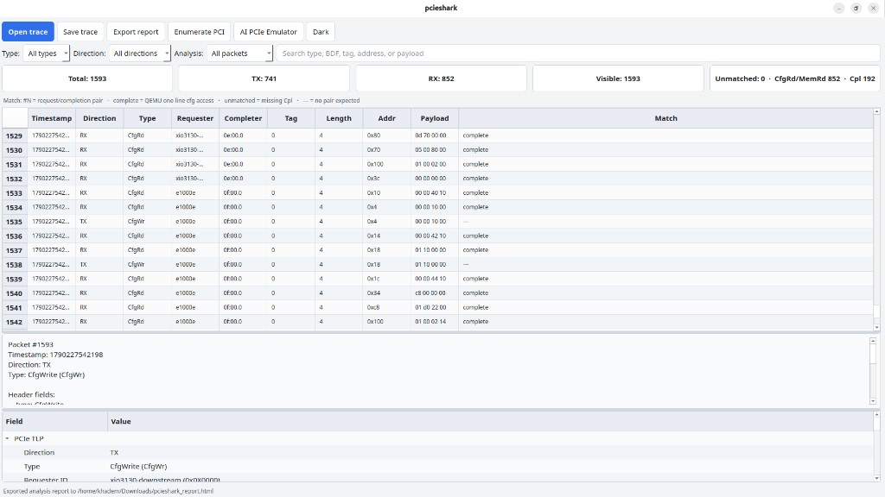
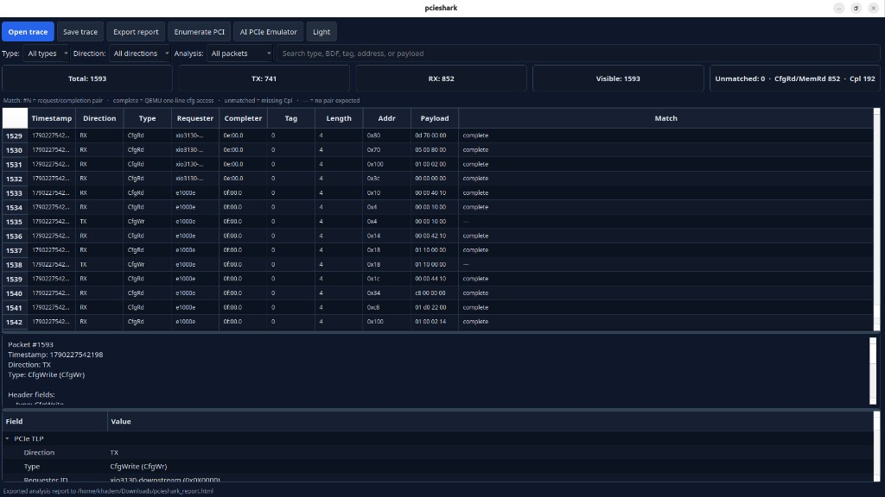

TLP create and parse
Build, decode, and filter configuration, memory, and completion packets.
Open PCIe trace, enumeration, and analysis toolkit. Same stack on real devices and emulated fabrics.
A reusable C library, CLI tools, and a Qt GUI for building, inspecting, and validating PCIe traffic — without a closed vendor stack.
Build, decode, and filter configuration, memory, and completion packets.
Open CSV, QEMU pci_cfg_* logs, or library captures. Match requests to completions.
Packet table, payload hex, BDF decode, search, and HTML report export.
Read Linux sysfs config space on a real endpoint. Dummy backend for software-only work.
Shared golden AI fabric for Zephyr or Linux guests: root ports, switches, NVMe, GPU stand-ins, NICs.
Emulator Measure times a real config-space walk of the deployed topology. No invented token rates.
AI PCIe emulator walkthrough: live TLPs, golden fabric enumeration, and performance status.

Light and dark views of a live QEMU config-space trace, including Match analysis.


.pcie file and inspect TLPs.Linux, CMake 3.13+, a C/C++ toolchain, and Qt 6 for the GUI.
git clone git@github.com:khademullah/pcieshark.git cd pcieshark cmake -S . -B build cmake --build build -j$(nproc) ./run_pcieshark.sh